전기산업기사 (2012-03-04 기출문제)
1과목: 전기자기학
1. 전하 q[C]가 진공 중의 자계 H[AT/m]에 수직 방향으로 v[m/s]의 속도로 움직일 때 받는 힘은 몇 [N]인가? (단, μ0는 진공의 투자율이다.)
- qH/μ0v
- qvH
- qvH/μ0
- μ0qvH
(정답률: 78%)

2. 다음 조건 중 틀린 것은? (단, Xm: 비자화율, μr: 비투자율이다.)
- 물질은 Xm또는 μr의 값에 따라 역자성체, 상자성체, 강자성체 등으로 구분한다.
- Xm > 0, μr > 1이면 상자성체
- Xm <0, μr < 1이면 역자성체
- μr << 1이면 강자성체
(정답률: 78%)
3. 전하 Q[C]으로 대전된 반지름 a[m]의 구도체가 반지름 r[m]로 비유전율 ℇs의 동심구 유전체로 둘러싸여 있을 때 이 구도체의 정전용량 [F]은? (단, a＜r이라 한다.)
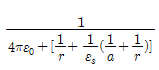
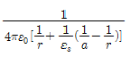
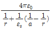
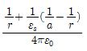
(정답률: 66%)
4. 면적이 S[m2], 극판 간격이 d[m], 유전율이 ℇ[F/m]인 평행판 콘덴서에 V[V]의 전압이 가해졌을 대 축적되는 전하 Q[C]는?
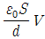
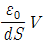
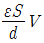
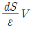
(정답률: 67%)
5. 다음 중 영전위로 볼 수 없는 것은?
- 가상 음전하가 존재하는 무한원점
- 전지의 음극
- 지구의 대지
- 전계내의 대전도체
(정답률: 63%)
6. 그림과 같이＋q[C/m]로 대전된 두 도선이 d[m]의 간격으로 평행하게 가설되었을 때, 이 두 도선간에서 전계가 최소가 되는 점은?
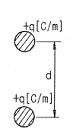
- d/3지점
- d/2지점
- 2/3d지점
- 3/5d지점
(정답률: 81%)
7. 점 (-2, 1, 5)[m]와 점 (1, 3, -1)[m]에 각각 위치해 있는 점전하 1[μC]과 4[μC]에 의해 발생된 전위장 내에 저장된 정전 에너지는 약 몇[mJ]인가?
- 2.57
- 5.14
- 7.71
- 10.28
(정답률: 54%)
8. 변위전류 밀도를 나타낸 식은? (단, ø는 자속, D는 전속밀도, B는 자속밀도, Nø는 자속 쇄교수이다.)
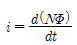
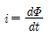
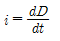
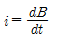
(정답률: 58%)
9. 정현파 자속의 주파수를 3배로 높일 때 유기 기전력은 어떻게 변화하는가?
- 3배로 감소
- 3배로 증가
- 9배로 감소
- 9배로 증가
(정답률: 75%)
10. 어느 철심에 도선을 250회 감고 여기에 2[A]의 전류를 흘릴 때 발생하는 자속이 0.02[wb]이었다. 이 코일의 자기 인덕턴스는 몇 [H]인가?
- 1.⑤
- 1.25
- 2.5
- √2π
(정답률: 73%)
11. 도체 2를 Q[C]으로 대전된 도체 1에 접속하면 도체 2가 얻는 전하는 몇[C]이 되는지를 전위계수로 표시하면? (단, P11, P12, P21, P22는 전위계수이다.)
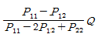
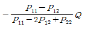
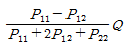
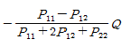
(정답률: 71%)
12. 무한 평면 도체에서부터 a[m]의 거리에 점전하 Q[C]가 있을 때, 이 점전하와 평면 도체간의 작용력은 몇[N]인가?
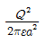
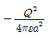
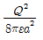
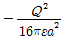
(정답률: 65%)
13. 유전율이 각각 ℇ1, ℇ2인 두 유전체가 접해 있다. 각 유전체 중의 전계 및 전속밀도가 각각 E1, D1및 E2, D2이고, 경계면에 대한 입사각 및 굴절각이θ1, θ2 일 때, 경계조건으로 옳은 것은?
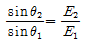
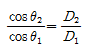
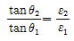
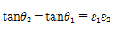
(정답률: 83%)
14. 한변의 길이가 10[m]되는 정방형 회로에 100[A]의 전류가 흐를 때 회로 중심부의 자계의 세기는 약 몇[A/m]인가?
- 5
- 9
- 16
- 21
(정답률: 51%)
15. 전류 I[A]가 반지름 a[m]의 원주를 균일하게 흐를 때 원주 내부의 중심에서 r[m] 떨어진 원주 내부 점의 자계의 세기는 몇[AT/m]인가?
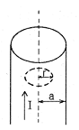
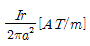
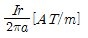
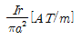
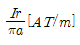
(정답률: 54%)
16. 전원으로 연결한 코일에 10[A]가 흐르고 있다. 지금 순간적으로 전원을 분리하고 코일에 저항을 연결하였을 때 저항에서 24[cal]의 열량이 발생하였다. 코일의 자기 인덕턴스는 몇[H]인가?
- 0.1
- 0.5
- 2
- 24
(정답률: 40%)
17. 반지름 a[m]인 전선을 지상 h[m] 높이에 지면에 나란하게 가설하였을 때의 단위 길이당 자기유도계수 L[H/m]은? (단, 도선의 투자율은μ[H/m]이다.)
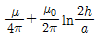
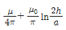
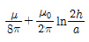
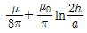
(정답률: 55%)
18. 다음 중 맥스웰의 전자 방정식이 아닌 것은?(오류 신고가 접수된 문제입니다. 반드시 정답과 해설을 확인하시기 바랍니다.)
- ▽ × H = i + ∂D/∂t
- ▽ × E = -∂H/ ∂t
- ▽ ㆍ D = p
- ▽ ㆍ i = -(∂p/∂t)
(정답률: 58%)
19. 기자력의 단위는?
- V
- Wb
- AT
- N
(정답률: 75%)
20. 도체의 길이 l[m], 단면적 S[m2]의 저항
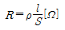
으로 표현되는데 여기서 p의 역수를 무엇이라고 하는가?- 저항률
- 고유저항
- 도전율
- 비례상수
(정답률: 76%)
2과목: 전력공학
21. SF6가스 차단기의 설명으로 적절하지 않은 것은?
- SF6가스는 절연내력이 공기보다 크다.
- 개폐시의 소음이 작다.
- 근거리 고장 등 가혹한 재기 전압에 대해서 우수하다.
- 아크에 의해 SF6 가스는 분해되어 유독가스를 발생시킨다
(정답률: 82%)
22. 케이블의 전력손실과 관계가 없는 것은?
- 도체의 저항손
- 유전체손
- 연피손
- 철손
(정답률: 65%)
23. 수전단에 관련된 다음 사항 중 틀린 것은?
- 경부하시 수전단에 설치된 동기조상기는 부족 여자로 운전
- 중부하시 수전단에 설치된 동기조상기는 부족 여자로 운전
- 중부하시 수전단에 전력 콘덴서를 투입
- 시충전시 수전단 전압이 송전단 전압보다 높게됨
(정답률: 64%)
24. 전원이 양단에 있는 방사상 송전선로의 단락보호에 사용되는 계전기의 조합 방식은?
- 방향거리 계전기와 과전압 계전기의 조합
- 방향단락 계전기와 과전류 계전기의 조합
- 선택접지 계전기와 과전류 계전기의 조합
- 부족전류 계전기와 과전압 계전기의 조합
(정답률: 71%)
25. 저압 뱅킹 방식에 대한 설명 중 맞지 않는 것은?
- 전압 동요가 적다.
- 캐스케이딩 현상에 의해 고장 확대가 축소된다.
- 부하 증가에 대한 융통성이 좋다.
- 고장 보호 방식이 적당 할 때 공급 신뢰도는 향상된다.
(정답률: 76%)
26. 수전 용량에 비해 첨두부하가 커지면 부하율은 그에 따라 어떻게 되는가?
- 높아진다.
- 낮아진다.
- 변하지 않고 일정하다.
- 부하의 종류에 따라 달라진다.
(정답률: 59%)
27. 단상 2선식 배전선로에서 대지정전용량을 Cs 선간정전용량을 Cm 라 할 때 작용 정전용량은?
- Cs + Cm
- Cs + 2Cm
- 2Cs + Cm
- Cs + 3Cm
(정답률: 73%)
28. 송전거리 50[㎞], 송전전력 5000[kW]일 때의 still식에 의한 송전전압은 대략 몇[kV] 정도가 적당한가?
- 10
- 30
- 50
- 70
(정답률: 66%)
29. 부하의 밸런스가 필요로 하는 배전 방식은?
- 3상 3선식
- 3상 4선식
- 단상 2선식
- 단상 3선식
(정답률: 72%)
30. 소호 리액터 접지 방식에 대한 설명 중 옳지 못한 것은?
- 전자 유도 장해가 경감된다.
- 지락 중에도 계속 송전이 가능하다.
- 지락 전류가 적다.
- 선택 지락 계전기의 동작이 용이하다.
(정답률: 64%)
31. 연간 최대전류 200[A], 배전 거리 10[㎞]의 말단에 집중 부하를 가진 6.6[kV], 3상 3선식 배전선이 있다. 이 선로의 연간 손실 전력량은 몇[MWh]정도인가? (단, 부하율 F=0.6, 손실계수 H=0.3F+0.7F2이고, 전선의 저항은 0.25[Ω/km]이다.)
- 685
- 1135
- 1585
- 1825
(정답률: 47%)
32. 유량을 구분할 때 매년 1~2회 발생하는 출수의 유량을 나타내는 것은?
- 홍수량
- 풍수량
- 고수량
- 갈수량
(정답률: 55%)
33. 가공 선로에서 이도를 D라 하면 전선의 실제 길이는 경간 S보다 얼마나 차이가 나는가?
- 5D/8S
- 3D2/8S
- 9D/8S2
- 8D2/3S
(정답률: 73%)
34. 연가의 효과로 볼 수 없는 것은?
- 선로정수의 평형
- 대지 정전용량의 감소
- 통신선의 유도 장해의 감소
- 직렬 공진의 방지
(정답률: 64%)
35. 3상 3선식에서 일정한 거리에 일정한 전력을 송전할 경우 전로에서의 저항손은?
- 선간전압에 비례한다.
- 선간전압에 반비례한다.
- 선간전압의 2승에 비례한다.
- 선간전압의 2승에 반비례한다.
(정답률: 56%)
36. 단락점까지의 한 선의 임피던스 Z=3+j4[Ω](전원포함), 단락전의 단락점 전압이 3450[V]인, 단상 2선식 전선로의 단락 용량은 약 몇[KVA}인가? (단, 부하전류는 무시한다.)
- 540
- 650
- 840
- 1190
(정답률: 47%)
37. 전력용 콘덴서에 직렬로 콘덴서 용량의 5% 정도의 유도 리액턴스를 삽입하는 목적은?
- 제 3고조파를 제거시키기 위해
- 제 5고조파를 제거시키기 위해
- 이상 전압의 발생을 방지하기 위해
- 정전 용량을 조절하기 위해
(정답률: 79%)
38. 어떤 수력 발전소의 수압관에서 분출되는 물의 속도와 직접적인 관련이 없는 것은?
- 수면에서의 연직거리
- 관의 경사
- 관의 길이
- 유량
(정답률: 74%)
39. 가공전선을 단도체식으로 하는 것보다 같은 단면적의 복도체식으로 하였을 경우 옳지 않은 것은?
- 전선의 인덕턴스가 감소.
- 전선의 정전용량이 감소
- 코로나 손실이 적어진다.
- 송전용량이 증가한다.
(정답률: 65%)
40. 다음 중 배전선로에 사용되는 개폐기의 종류와 그 특성의 연결이 바르지 못한것은?
- 컷아웃스위치(COS) - 주된 용도로는 주상변압기의 고장이 배전선로에 파급되는 것을 방지하고 변압기의 과부하 소손을 예방하고자 사용한다.
- 부하 개폐기 - 고장 전류와 같은 대전류는 차단할 수 없지만 평상 운전시의 부하 전류는 개폐할 수 있다.
- 리클로저(recloser) - 선로에 고장이 발생하였을 때 고장 전류를 검출하여 지정된 시간 내에 고속 차단하고 자동 재폐로 동작을 수행하여 고장 구간을 분리하거나 재송전하는 장치이다.
- 섹셔널라이저(sectionalizer) - 고장 발생시 신속히 고장 전류를 차단하여 사고를 국부적으로 분리시키는 것으로 후비 보호 장치와 직렬로 설치하여야 한다.
(정답률: 64%)
3과목: 전기기기
41. 75[W]정도 이하의 소형 공구, 영사기, 치과의료용 등에 사용되고 만능 전동기라고도 하는 정류자 전동기는?
- 단상 직권 정류자 전동기
- 단상 반발 정류자 전동기
- 3상 직권 정류자 전동기
- 단상 분권 정류자 전동기
(정답률: 70%)
42. 3상 서보모터에 평형 2상 전압을 가하여 동작시킬 때의 속도-토크 특성곡선에서 최대 토크가 발생할 슬림 s는?
- 0.⑤ ＜ s ＜0.2
- 0.2 ＜ s ＜ 0.8
- 0.8 ＜ s ＜ 1
- 1 ＜ s ＜ 2
(정답률: 58%)
43. 철극형 (凸극형) 발전기의 특징은?
- 자극편 부분의 공극이 크다.
- 회전이 빨라진다.
- 자극편 부분의 자기저항은 크고 그 밖의 부분에서는 자기저항이 현저히 낮다.
- 전기자 반작용 자속수가 역률의 영향을 받는다.
(정답률: 46%)
44. 3상 6극 슬롯수 54의 동기 발전기가 있다. 어떤 전기자 코일의 두 변이 제 1슬롯과 제 8슬롯에 들어 있다면 기본파에 대한 단절권 계수는 약 얼마인가?
- 0.6983
- 0.7848
- 0.8749
- 0.9397
(정답률: 53%)
45. 6300/210[V], 20[KVA] 단상 변압기 1차 저항과 리액턴스가 각각 15.2[Ω]과 21.6[Ω], 2차 저항과 리액턴스가 각각 0.019[Ω], 0.028[Ω이다. 백분율 임피던스[%]는?
- 약 1.86
- 약 2.87
- 약 3.86
- 약 4.86
(정답률: 49%)
46. 직류 분권전동기 기동시 계자 저항기의 저항값은?
- 최대로 해둔다.
- 0(영)으로 해둔다.
- 중간으로 해둔다.
- 1/3으로 해둔다.
(정답률: 78%)
47. SCR의 애노드 전류가 10A일 때 게이트 전류를 1/2로 줄이면 애노드 전류는 몇 A인가?
- 20
- 10
- 5
- 2
(정답률: 57%)
48. 3상 유도전동기의 속도제어법이 아닌것은?
- 1차 주파수제어
- 2차 저항제어
- 극수 변환법
- 1차 여자제어
(정답률: 68%)
49. 직류 발전기에서 양호한 정류를 얻는 조건이 아닌것은?
- 보극을 마련한다.
- 보상권선을 마련한다.
- 브러시의 접촉저항을 적게한다.
- 정류를 받는 코일의 자기인덕턴스를 적게한다.
(정답률: 74%)
50. 단상 전파정류회로에서 맥동률은?
- 약 0.17
- 약 0.34
- 약 0.48
- 약 0.96
(정답률: 66%)
51. 변압기 철심으로 갖추어야 할 성질로 맞지 않는 것은?
- 투자율이 클것
- 전기 저항이 작을 것
- 히스테리시스 계수가 작을 것
- 성층 철심으로 할 것
(정답률: 64%)
52. 동기기의 안정도를 증진시키는 방법은?
- 속응 여자방식을 채용한다.
- 역상 임피던스를 작게한다.
- 회전부의 플라이휠 효과를 작게한다.
- 단락비를 작게한다.
(정답률: 64%)
53. 전기자 저항이 0.⑤[Ω]인 직류 분권 발전기가 있다. 회전수가 1000[rpm]이고 단자전압이 220[V]일 때 전기자 전류가 100이다. 분권 발전기를 전동기로 사용하여 그 단자전압 및 전기자 전류가 위의 값과 똑같을 경우 그 회전수 [rpm]는 약 얼마인가? (단, 전기자 반작용은 무시한다.)
- 약 1046.5
- 약 977.8
- 약 977.3
- 약 955.6
(정답률: 41%)
54. 20[KVA]의 단상변압기가 역률 1일 때 전부하 효율이 97{%]이다. 3/4부하일 때 이 변압기는 최고 효율을 나타낸다. 전부하에서 철손(Pi와 동손 (Pc)은 각각 몇[W]인가?
- Pi=222, Pc=396
- Pi=232, Pc=386
- Pi=242, Pc=376
- Pi=252, Pc=356
(정답률: 47%)
55. 50[hz] 4극 15[KW]의 3상 유도전동기가 있다. 전부하시의 회전수가 1450[rpm]이라면 토크는 몇[kg ㆍ m]인가?
- 약 68.52
- 약 88.65
- 약 98.68
- 약 10.07
(정답률: 54%)
56. 동기 전동기를 부족여자로 운전하면 어떠한 작용을 하는가?
- 충전 전류가 흐른다.
- 콘덴서 작용을 한다.
- 뒤진 전류가 흐른다.
- 뒤진 전류를 보상한다.
(정답률: 68%)
57. 주상 변압기에서 보통 동손과 철손의 비는 (a)이고 최대 효율이 되기 위해서는 동손과 철손의 비는 (b)이다. ( )안에 알맞은 것은?
- a = 1:1 b = 1 : 1
- a = 2:1 b = 1 : 1
- a = 1:1 b = 2 : 1
- a = 3:1 b = 1 : 1
(정답률: 66%)
58. 1차 권선수 N1, 2차 권선수 N2, 1차 권선계수 kw1, 2차 권선계수 kw2인 유도 전동기가 슬립 s로 운전하는 경우 전압비는?
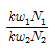
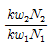
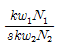
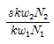
(정답률: 58%)
59. 단상 유도 전압 조정기의 1차 권선과 2차 권선의 축 사이의 각도를 ∝라 하고, 양 권선의 축이 일치할 때 2차 권선의 유기 전압을 E2, 전원 전압을 V1, 부하측의 전압을 V2라고 하면 임의의 각 ∝일 때 V2를 나타내는 식은?
- V2=V1+E2cos∝
- V2=V1-E2cos∝
- V2=E2+V1cos∝
- V2=E2-V1cos∝
(정답률: 57%)
60. 단상 전파 제어 정류 회로에서 순저항 부하일 때의 평균 출력 전압은? (단, Vm은 인가 전압의 최대값이고 점호각은 ∝이다.)
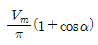
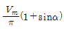
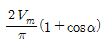
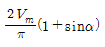
(정답률: 52%)
4과목: 회로이론
61. 파고율이 2가 되는 파형은?
- 정현파
- 톱니파
- 사각파
- 정류파(정현반파)
(정답률: 62%)
62.
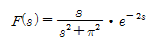
함수를 시간추이 정리에 의해서 역변환하면?- sinπ(t-2) ㆍ u(t-2)
- sinπ(t+a) ㆍ u(t+a)
- cosπ(t-2) ㆍ u(t-2)
- cosπ(t+a) ㆍ u(t+a)
(정답률: 56%)
63. 비접지 3상 Y부하의 각 선에 흐르는 비대칭 각 선전류를 Ia, Ib, Ic라 할 때 선전류의 영상분 I0는?
- Ia+Ib
- Ia + Ib+Ic
- 1/3(Ia-Ib-Ic)
- 0
(정답률: 61%)
64. 평형 3상 부하에 전력을 공급할 때 선전류 값이 20[A]이고, 부하의 소비전력이 4[KW]이다. 이 부하의 등가 Y회로에 대한 각 상의 저항은 약 몇[Ω]인가?
- 3.3
- 5.7
- 7.2
- 10
(정답률: 44%)
65. 그림과 같은 회로에서 부하 RL에서 소비되는 최대전력은 몇[W]인가?
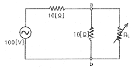
- 50
- 125
- 250
- 500
(정답률: 39%)
66. 3상 불평형 전압을 Va, Vb, Vc 라고 할 때 정상전압은? (단,
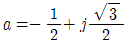
이다.)(오류 신고가 접수된 문제입니다. 반드시 정답과 해설을 확인하시기 바랍니다.)- 1/3(Va+aVb+a2Vc)
- 1/3(Va+a2Vb+aVc)
- 1/3(Va+a2Vb+Vc)
- 1/3(Va+Vb+Vc)
(정답률: 68%)
67. 평형 3상 무유도 저항 부하가 3상 4선식 회로에 접속되어 있을 때 단상 전력계를 그림과 같이 접속했더니 그 지시값이 W[W]이었다. 이 부하의 전력 [W]은?
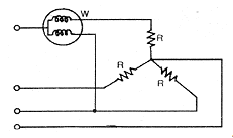
- √2W
- 2W
- √3W
- 3W
(정답률: 57%)
68.
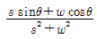
의 역라플라스 변환을 구하면 어떻게 되는가?- sin(wt-θ)
- sin(wt+θ)
- cos(wt-θ)
- cos(wt+θ)
(정답률: 48%)
69. t=3[ms]에서 최대치 5[V]에 도달하는 60[hz]의 정현파 전압 r(t)를 시간함수로 표시하면 어떻게 되는가?
- e=5sin(376.8t+25.2°)[V]
- e=5sin(376.8t+35.2°)[V]
- e=5√2sin(376.8t+25.2°[V]
- e= 5√2sin(376.8t+35.2°)[V]
(정답률: 32%)
70. 자동차 축전지의 무부하 전압을 측정하니 13.5[V]를 지시하였다. 이 때 정격이 12[V], 55[W]인 자동차 전구를 연결하여 축전지의 단자전압을 측정하니 12[V]를 지시하였다. 축전지의 내부저항은 약 몇[Ω]인가?
- 0.33
- 0.45
- 2.62
- 3.31
(정답률: 40%)
71. 그림과 같은 회로에서t=0의 시각에 스위치 S를 닫을 때 전류 i(t)의 라플라스 변환 I(s)는? (단, Vc(0)=1[V]이다. )
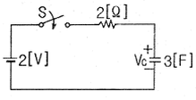
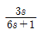
(정답률: 38%)
72. RL직렬 회로에 V인 직류 전압원을 갑자기 연결 하였을 때 t=0+인 순간, 이 회로에 흐르는 회로전류에 대하여 바르게 표현된 것은?
- 이 회로에는 전류가 흐르지 않는다.
- 이 회로에는 V/R 크기의 전류가 흐른다.
- 이 회로에는 무한대의 전류가 흐른다.
- 이 회로에는 v/(R+jwL)의 전류가 흐른다.
(정답률: 53%)
73. 반파 및 정현대칭의 왜형파의 푸리에 급수에서 옳게 표현된 것은? (단,임)
- an의 우수항만 존재한다.
- an의 기수항만 존재한다.
- bn의 우수항만 존재한다.
- bn의 기수항만 존재한다.
(정답률: 63%)
74. 그림과 같은 교류 브리지가 평형상태에 있다. L[H]의 값은 얼마인가?
(정답률: 51%)
75. 2개의 전력계로 평형 3상 부하의 전력을 측정하였더니 한쪽의 지시치가 다른 쪽 전력계의 지시치보다 3배이었다면 부하역률은 약 얼마인가?
- 0.37
- 0.57
- 0.76
- 0.86
(정답률: 33%)
76. 그림과 같은 4단자 회로의 4단자 정수 중 D의 값은?
- 1-w2LC
- jwL(2-w2LC)
- jwC
- jwL
(정답률: 59%)
77. 그림과 같은 회로의 2단자 임피던스 Z(s)는?
(정답률: 44%)
78. 리액턴스 함수가 로 표시되는 리액턴스 2단자망은?
(정답률: 49%)
79. 다음 회로에서 전압비 전달함수 는 어떻게 되는가?
(정답률: 55%)
80. 다음과 같은 회로에서 입력 전압의 실효치가 12[V]의 정현파일 때 전 전류 I[A]는?
- 3-j4
- 3+j4
- 4-j3
- 6+j10
(정답률: 45%)
5과목: 전기설비기술기준 및 판단 기준
81. 특고압 가공전선이 삭도와 제2차 접근상태로 시설할 경우 특고압 가공전선로는 어느 보안공사를 하여야 하는가?
- 고압 보안공사
- 제 1종 특고압 보안공사
- 제 2종 특고압 보안공사
- 제 3종 특고압 보안공사
(정답률: 62%)
82. 특고압 가공전선로로부터 공급을 받는 수용장소의 인입구에 시설하는 피뢰기의 접지공사는?(관련 규정 개정전 문제로 여기서는 기존 정답인 1번을 누르면 정답 처리됩니다. 자세한 내용은 해설을 참고하세요.)
- 제 1종 접지공사
- 제 2종 접지공사
- 제 3종 접지공사
- 특별 제 3종 접지공사
(정답률: 61%)
83. 폭연성 분진 또는 화약류의 분말이 존재하는 곳의 저압 옥내 배선은 어느 공사에 의하는가?
- 애자사용 공사 또는 가요전선관 공사
- 캡타이어 케이블 공사
- 합성수지관 공사
- 금속관 공사
(정답률: 74%)
84. 특고압 가공전선이 케이블인 경우에 통신선이 절연전선과 동등 이상의 절연 효력이 있을 때 통신선과 특고압 가공전선과의 이격거리는 몇 [cm]이상인가?
- 30
- 60
- 75
- 90
(정답률: 45%)
85. 저압 옥상전선로의 전선과 식물사이의 이격거리는 일반적으로 어떻게 규정하고 있는가?
- 20cm 이상 이격거리를 두어야 한다.
- 30cm 이상 이격거리를 두어야 한다.
- 특별한 규정이 없다.
- 바람등에 의하여 접촉하지 않도록 한다.
(정답률: 67%)
86. 케이블 공사로 저압 옥내배선을 시설하려고 한다. 캡타이어 케이블을 사용하여 조영재의 아랫면에 따라 붙이고자 할 때 전선의 지지점간의 거리는 몇 [m]이하로 하여야 하는가?
- 1
- 2
- 3
- 5
(정답률: 41%)
87. 특고압 가공전선과 지지물, 완금류, 지주 또는 지선사이의 이격거리는 사용전압 15[kV] 미만인 경우 일반적으로 몇[cm] 이상이어야 하는가?
- 15
- 20
- 30
- 35
(정답률: 48%)
88. 전기철도에서 직류 귀선의 비절연 부분에 대한 전식 방지를 위한 귀산의 극성은 어떻게 해야 하는가?(오류 신고가 접수된 문제입니다. 반드시 정답과 해설을 확인하시기 바랍니다.)
- 감극성으로 한다.
- 가극성으로 한다.
- 부극성으로 한다.
- 정극성으로 한다.
(정답률: 56%)
89. 발전소에서 계측장치를 시설하지 않아도 되는 것은?
- 발전기의 전압, 전류 및 전력
- 발전기의 베어링 및 고정자 온도
- 특고압 모선의 전압, 전류 및 전력
- 특고압용 변압기의 온도
(정답률: 44%)
90. 최대 사용전압이 380[V]인 3상 유도 전동기의 절연내력은 몇[V]의 시험전압에 견디어야 하는가?(관련 규정 개정전 문제로 여기서는 기존 정답인 3번을 누르면 정답 처리됩니다. 자세한 내용은 해설을 참고하세요.)
- 475
- 500
- 570
- 760
(정답률: 70%)
91. 변전소 울타리, 담 등을 시설할 때, 사용전압이 345[KV]이면, 울타리, 담 등의 높이와 울타리, 담 등으로부터 충전부분 까지의 거리의 합계는 몇[m]이상으로 하여야 하는가?
- 6.48
- 8.16
- 8.40
- 8.28
(정답률: 70%)
92. 옥내에 시설하는 전기 시설물에 대한 내용 중 틀린 것은?
- 백열전등 또는 방전등에 전기를 공급하는 옥내전로의 대지 전압은 300V 이하이어야 한다.
- 정격 소비전력 5kw 이상의 전기기계기구는 그 전로의 옥내배선과 직접 접속할 수 있다.
- 옥내에 시설하는 저압용의 배선기구는 그 충전부분이 노출하지 않도록 시설하여야 한다.
- 저압 옥내배선의 사용전선은 단면적 2.5mm2 이상의 연동선이어야 한다.
(정답률: 59%)
93. 사람이 상시 통행하는 터널 내 저압전선로의 애자 사용 공사시 노면상 최소 높이는?
- 2.0
- 2.2
- 2.5
- 3.0
(정답률: 56%)
94. 특고압 가공전선로에 사용하는 철탑 종류 중 전선로 지지물의 양측 경간의 차가 큰 곳에 사용하는 철탑은?
- 각도형 철탑
- 인류형 철탑
- 보강형 철탑
- 내장형 철탑
(정답률: 76%)
95. 중성선 다중접지식의 것으로 전로에 지락이 생겼을 때에 2초 이내에 자동적으로 이를 전로로부터 차단하는 장치가 되어 있는 22.9kV 가공 전선로를 상부 조영재의 위쪽에서 접근상태로 시설하는 경우, 가공전선과 조영재의 위쪽에서 접근상태로 시설하는 경우, 가공전선과 건조물과의 이격거리는 몇[m]이상이어야 하는가? (단, 전선으로는 나전선을 사용한다고 한다.)
- 1.2
- 1.5
- 2.5
- 3.0
(정답률: 34%)
96. 저압 가공전선이 다른 저압 가공전선과 접근 상태로 시설 되거나 교차하여 시설되는 경우에 저압 가공전선 상호간의 이격거리는 몇[cm] 이상이어야 하는가? (단, 한 쪽의 전선이 고압 절연전선이라고 한다.)
- 30
- 60
- 80
- 100
(정답률: 40%)
97. 154[kV] 특고압 가공전선을 사람이 쉽게 들어갈 수 없는 산지 등에 시설하는 경우 지표상의 높이는 몇[m] 이상으로 하여야 하는가?
- 4
- 5
- 6.5
- 8
(정답률: 64%)
98. 66kV 특고압 가공전선로를 케이블을 사용하여 시가지에 시설하려고 한다. 애자 장치는 50[%] 충격섬락 전압의 값이 다른 부분을 지지하는 애자장치의 몇 [%] 이상으로 되어야 하는가?
- 100
- 115
- 110
- 1⑤
(정답률: 58%)
99. 다음 중 농사용 저압 가공전선로의 시설 기준으로 옳지 않은 것은?
- 사용 전압이 저압일 것
- 저압 가공 전선의 인장 강도는 1.38kN 이상일 것
- 저압 가공전선의 지표상 높이는 3.5m 이상일 것
- 전선로의 경간은 40m 이하일 것
(정답률: 62%)
100. 66kV 특고압 가공전선로를 시가지에 설치할 때, 전선의 인장강도 21.67kN 이상의 연선 또는 단면적 최소 몇[mm2] 이상의 경동 연선 또는 이와 동등 이상의 세기 및 굵기의 연선을 사용해야 하는가?(오류 신고가 접수된 문제입니다. 반드시 정답과 해설을 확인하시기 바랍니다.)
- 30
- 38
- 50
- 55
(정답률: 54%)